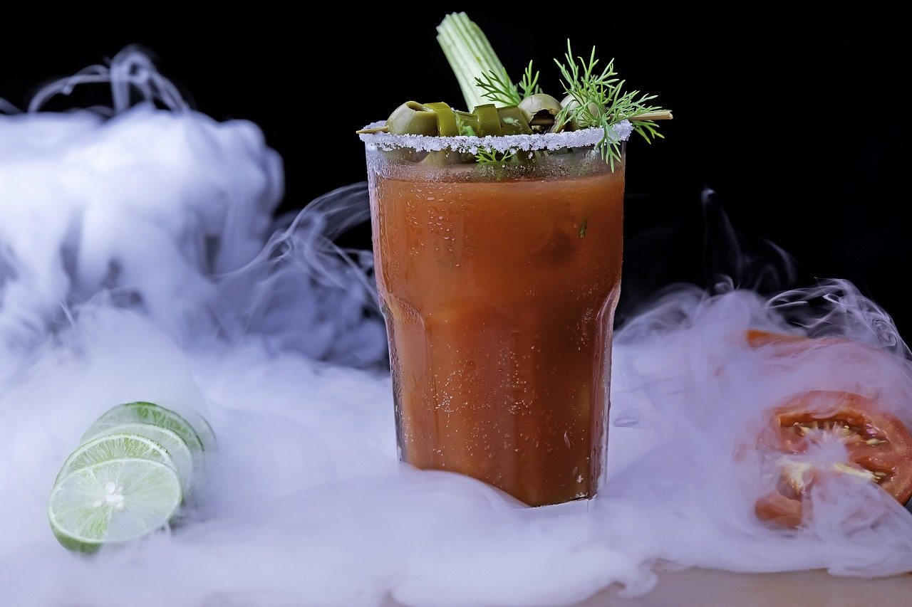

Bloody Mary

This is a
classic
brunch cocktail
This recipe makes a pitcher that serves 20
What you'll need to make the Mix
96 oz tomato juice
2 tablespoons tamari
3 tablespoons red wine vinegar
3 tablespoons ginger syrup
2 tablespoons tabasco
juice of 1 lime
heaping tablespoon spicy brown mustard
30 cranks black pepper
Whisk together to combine
What you'll need for the cocktail
2 oz vodka
6 oz Bloody Mary mix
ice
celery salt (for rimming)
1 celery stalk
any other optional garnishes (lime, lemon, olives, pickles, etc.)
Building the cocktail
Use a lime wedge to moisten the rim of a pint glass
Pour celery salt onto a plate and dip the rim of the glass into it
fill the glass 3/4 full of ice
pour in 2 oz vodka
pour in 6 oz bloody mary mix
use a celery stalk to mix drink, leave stalk in
place optional garnishes on rim using toothpicks
top with a crank of fresh black pepper
Enjoy and
repeat as necessary
until desired morning intoxication level is reached
For more brunch cocktail inspiration, see what foodandwine
suggests
If this recipe made you hungry, check out Kim Robinson's lit mushroom guide
Click Here!